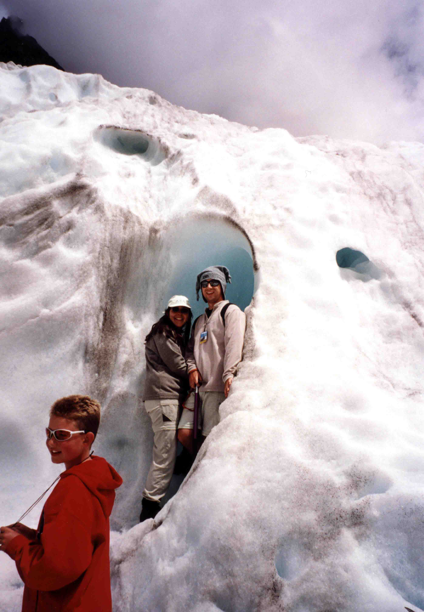
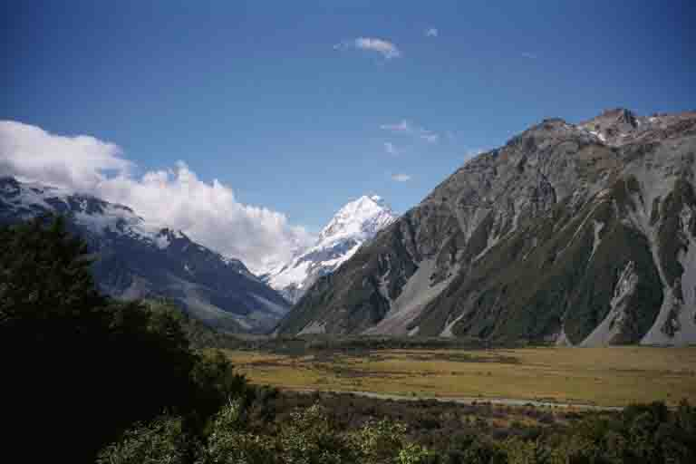

January 29, 2002 • Queenstown, New Zealand • by sue_and_nathan
Balloons and ice-picks
Queenstown, New Zealand
We saw in 2002 on Ray's boat on Lake Wakatipu with Ray, Daniel Day, Viv (Sue's sister) and Heleyne (her partner). Quite obscure really a gathering of some of the Crow Clan so far from home! The shores of the lake were lined with crowds of people and there we were, relaxing in comfort on the boat and watching the fireworks explode above our heads. Once again, we couldn't help but wonder what folk at home were doing and how many layers they would be wearing!!
One morning, a couple of weeks ago, we were woken at 5:30am by a phone call telling us the weather was fine and we should rendezvous on Speargrass Flats. Half an hour later we were standing in a wicker basket slowly ascending into the morning sky. This huge balloon swiftly rose to 8000ft from where we watched the sun rise over the Remarkables (what a name, huh?) We floated over the countryside and watched as people began their days below us. After about an hour up there we gently descended into a field where our champagne breakfast awaited us! Ballooning is definitely the way to travel, although I doubt we'd have got this far if we'd relied on hot air!(http://www.ballooningnz.com)
Some of you may remember or last trip to NZ a couple of years ago, when it rained for the duration and the town was flooded. Well, that time we took a trip out to Milford Sound. It was grey and choppy and didn't really live up to its image as one of the most beautiful places in the world. This time it couldn't have been more different. We got there and the sky was bright blue, the sea so serene and the mountains covered in green. We took a boat out onto the Sound (well actually it's a Fjord, but let's not worry about that!), past a couple of seal colonies and out onto a totally different sea from the roaring, uninviting one that had prevented us from going any further on our previous trip. Milford Sound is one of those places that is just impossible to describe. On a day like the one we had it looks like a perfect postcard shot. You'll just have to go and have a look for yourselves or else wait for us to return with our tonnes of photos!
Queentown was where we spent the bulk of our time, mainly relaxing, walking (we did day one of the Routeburn Track which starts just down the road in Glenorchy) and enjoying Ray's house and ten acre garden. We also spent a bit of time watching Daniel Day doing 'big air' on the trial bike he'd got for Christmas (for the uninitiated out there 'big air' is the space between the back wheel and the ground when doing jumps and Daniel did plenty of those!) We also regularly watched in amazement as this true Kiwi kid did his party trick (usually when offered a couple of dollars from his Auntie Suzy for the spectacle!) which was swimming in ice cold lakes. One, in particular, called Lake Alta on the top of the Remarkables was absolutely bloomin' freezing!
One of the most special things we did while in NZ was a 'heli-hike' on to Franz Josef Glacier (http://www.nzguides.com/photography/index.html) All six of us took a helicopter over the snow to the top of the Glacier where we landed on the bright blue ice. From here we did a 2 hour hike armed with a ice pick and wearing spiked boots. Nathan kept doing his Scott of the Antarctic poses for the camera, but they weren't that realistic as he was wearing shorts and Sue's snow-boarding reindeer hat! It was just amazing up there, walking along the edges of deep chasms (and we know they were deep because when anyone kicked any ice into them there was quite an interval before the splash) and through ice caves. The final ice cave was where we experienced one of our more intrepid (or do I mean scary?!) moments. We had to balance on ice ledges over a deep drop into freezing cold waters while bits of ice broke off above our heads and dripped down our necks. One leg was either side of the drop and slipping would mean the splits (which neither of us are sure we're capable of!) or a rather cool bath. We survived it, of course, and felt like great adventurers at the end. As we emerged a huge lump of ice broke away from the top of the Glacier and came hurtling down. The sound was deafening and the boom as it reached the bottom reminded us somehow of how small we are and how very much in control Mother Nature is in a place like NZ.
Leaving Queenstown was difficult, as leaving places has been all the way through this trip. The difference this time was saying goodbye to a sibling and a little boy who won't be so little next time we see him.
NZ over, we flew back to Sydney to do the bridge climb which we'd missed last time! That was this morning and it was GREAT! Well worth coming back for. Sydney Harbour Bridge is the largest single span bridge in the world. It's 503 metres long and 134 metres high and we went all the way to the top! The views up there were fab, although we didn't feel as adventurous as we'd expected as there was an 84 year old lady up there celebrating her birthday! (http://www.bridgeclimb.com)
And tomorrow, well, it's another country. And, that country is India! A friend told us that we'll need a good sense of humour and the patience of the Buddha so we're trying to limber up, but no doubt it'll be a bit of a shock after the Antipodes. So, tomorrow night we'll be in Mumbai. Think of us, won't you?!

Sue and Nathan in an ice-cave on Franz Josef glacier

View of Mount Cook, NZ